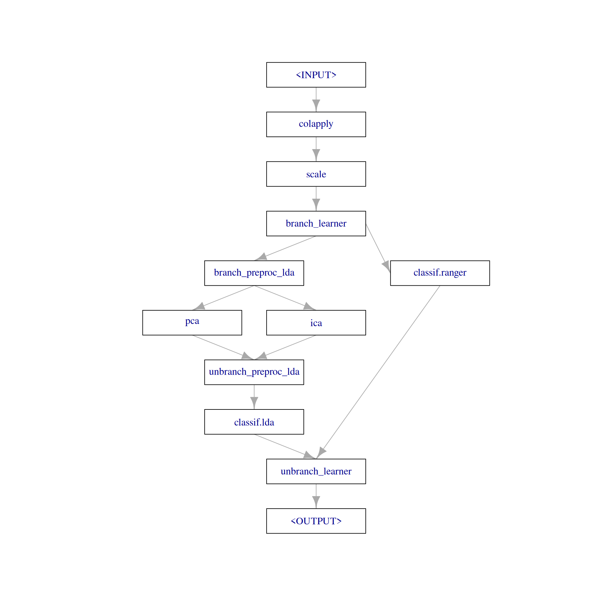

# include: false
requireNamespace("bst")Loading required namespace: bstrequireNamespace("fastICA")Loading required namespace: fastICA# include: false
requireNamespace("bst")Loading required namespace: bstrequireNamespace("fastICA")Loading required namespace: fastICAIn this use case we show how to tune a rather complex graph consisting of different preprocessing steps and different learners where each preprocessing step and learner itself has parameters that can be tuned. You will learn the following:
Graph that consists of two common preprocessing steps, then switches between two dimensionality reduction techniques followed by a Learner vs. no dimensionality reduction followed by another Learnergrid search to find an optimal choice of preprocessing steps and hyperparameters.Ideally you already had a look at how to tune over multiple learners.
First, we load the packages we will need:
library(mlr3verse)
library(mlr3learners)We initialize the random number generator with a fixed seed for reproducibility, and decrease the verbosity of the logger to keep the output clearly represented. The lgr package is used for logging in all mlr3 packages. The mlr3 logger prints the logging messages from the base package, whereas the bbotk logger is responsible for logging messages from the optimization packages (e.g. mlr3tuning ).
set.seed(7832)
lgr::get_logger("mlr3")$set_threshold("warn")
lgr::get_logger("bbotk")$set_threshold("warn")We are going to work with some gene expression data included as a supplement in the bst package. The data consists of 2308 gene profiles in 63 training and 20 test samples. The following data preprocessing steps are done analogously as in vignette("khan", package = "bst"):
datafile = system.file("extdata", "supplemental_data", package = "bst")
dat0 = read.delim(datafile, header = TRUE, skip = 1)[, -(1:2)]
dat0 = t(dat0)
dat = data.frame(dat0[!(rownames(dat0) %in%
c("TEST.9", "TEST.13", "TEST.5", "TEST.3", "TEST.11")), ])
dat$class = as.factor(
c(substr(rownames(dat)[1:63], start = 1, stop = 2),
c("NB", "RM", "NB", "EW", "RM", "BL", "EW", "RM", "EW", "EW", "EW", "RM",
"BL", "RM", "NB", "NB", "NB", "NB", "BL", "EW")
)
)We then construct our training and test Task :
task = as_task_classif(dat, target = "class", id = "SRBCT")
task_train = task$clone(deep = TRUE)
task_train$filter(1:63)
task_test = task$clone(deep = TRUE)
task_test$filter(64:83)Our graph will start with log transforming the features, followed by scaling them. Then, either a PCA or ICA is applied to extract principal / independent components followed by fitting a LDA or a ranger random forest is fitted without any preprocessing (the log transformation and scaling should most likely affect the LDA more than the ranger random forest). Regarding the PCA and ICA, both the number of principal / independent components are tuning parameters. Regarding the LDA, we can further choose different methods for estimating the mean and variance and regarding the ranger, we want to tune the mtry and num.tree parameters. Note that the PCA-LDA combination has already been successfully applied in different cancer diagnostic contexts when the feature space is of high dimensionality (Morais and Lima 2018).
To allow for switching between the PCA / ICA-LDA and ranger we can either use branching or proxy pipelines, i.e., PipeOpBranch and PipeOpUnbranch or PipeOpProxy. We will first cover branching in detail and later show how the same can be done using PipeOpProxy.
First, we have a look at the baseline classification accuracy of the LDA and ranger on the training task:
base = benchmark(benchmark_grid(
task_train,
learners = list(lrn("classif.lda"), lrn("classif.ranger")),
resamplings = rsmp("cv", folds = 3)))Warning in lda.default(x, grouping, ...): variables are collinear
Warning in lda.default(x, grouping, ...): variables are collinear
Warning in lda.default(x, grouping, ...): variables are collinearbase$aggregate(measures = msr("classif.acc")) nr task_id learner_id resampling_id iters classif.acc
<int> <char> <char> <char> <int> <num>
1: 1 SRBCT classif.lda cv 3 0.6666667
2: 2 SRBCT classif.ranger cv 3 0.9206349
Hidden columns: resample_resultThe out-of-the-box ranger appears to already have good performance on the training task. Regarding the LDA, we do get a warning message that some features are colinear. This strongly suggests to reduce the dimensionality of the feature space. Let’s see if we can get some better performance, at least for the LDA.
Our graph starts with log transforming the features (we explicitly use base 10 only for better interpretability when inspecting the model later), using PipeOpColApply, followed by scaling the features using PipeOpScale. Then, the first branch allows for switching between the PCA / ICA-LDA and ranger, and within PCA / ICA-LDA, the second branch allows for switching between PCA and ICA:
graph1 =
po("colapply", applicator = function(x) log(x, base = 10)) %>>%
po("scale") %>>%
# pca / ica followed by lda vs. ranger
po("branch", id = "branch_learner", options = c("pca_ica_lda", "ranger")) %>>%
gunion(list(
po("branch", id = "branch_preproc_lda", options = c("pca", "ica")) %>>%
gunion(list(
po("pca"), po("ica")
)) %>>%
po("unbranch", id = "unbranch_preproc_lda") %>>%
lrn("classif.lda"),
lrn("classif.ranger")
)) %>>%
po("unbranch", id = "unbranch_learner")Note that the names of the options within each branch are arbitrary, but ideally they describe what is happening. Therefore we go with "pca_ica_lda" / "ranger” and "pca" / "ica". Finally, we also could have used the branch ppl to make branching easier (we will come back to this in the Proxy section). The graph looks like the following:
graph1$plot(html = FALSE)
We can inspect the parameters of the ParamSet of the graph to see which parameters can be set:
graph1$param_set$ids() [1] "colapply.applicator" "colapply.affect_columns"
[3] "scale.center" "scale.scale"
[5] "scale.robust" "scale.affect_columns"
[7] "branch_learner.selection" "branch_preproc_lda.selection"
[9] "pca.center" "pca.scale."
[11] "pca.rank." "pca.affect_columns"
[13] "ica.n.comp" "ica.alg.typ"
[15] "ica.fun" "ica.alpha"
[17] "ica.method" "ica.row.norm"
[19] "ica.maxit" "ica.tol"
[21] "ica.verbose" "ica.w.init"
[23] "ica.affect_columns" "classif.lda.dimen"
[25] "classif.lda.method" "classif.lda.nu"
[27] "classif.lda.predict.method" "classif.lda.predict.prior"
[29] "classif.lda.prior" "classif.lda.tol"
[31] "classif.ranger.always.split.variables" "classif.ranger.class.weights"
[33] "classif.ranger.holdout" "classif.ranger.importance"
[35] "classif.ranger.keep.inbag" "classif.ranger.max.depth"
[37] "classif.ranger.min.bucket" "classif.ranger.min.node.size"
[39] "classif.ranger.mtry" "classif.ranger.mtry.ratio"
[41] "classif.ranger.na.action" "classif.ranger.num.random.splits"
[43] "classif.ranger.node.stats" "classif.ranger.num.threads"
[45] "classif.ranger.num.trees" "classif.ranger.oob.error"
[47] "classif.ranger.regularization.factor" "classif.ranger.regularization.usedepth"
[49] "classif.ranger.replace" "classif.ranger.respect.unordered.factors"
[51] "classif.ranger.sample.fraction" "classif.ranger.save.memory"
[53] "classif.ranger.scale.permutation.importance" "classif.ranger.local.importance"
[55] "classif.ranger.seed" "classif.ranger.split.select.weights"
[57] "classif.ranger.splitrule" "classif.ranger.verbose"
[59] "classif.ranger.write.forest" The id’s are prefixed by the respective PipeOp they belong to, e.g., pca.rank. refers to the rank. parameter of PipeOpPCA.
Our graph either fits a LDA after applying PCA or ICA, or alternatively a ranger with no preprocessing. These two options each define selection parameters that we can tune. Moreover, within the respective PipeOp’s we want to tune the following parameters: pca.rank., ica.n.comp, classif.lda.method, classif.ranger.mtry, and classif.ranger.num.trees. The first two parameters are integers that in-principal could range from 1 to the number of features. However, for ICA, the upper bound must not exceed the number of observations and as we will later use 3-fold cross-validation as the resampling method for the tuning, we just set the upper bound to 30 (and do the same for PCA). Regarding the classif.lda.method we will only be interested in "moment" estimation vs. minimum volume ellipsoid covariance estimation ("mve"). Moreover, we set the lower bound of classif.ranger.mtry to 200 (which is around the number of features divided by 10) and the upper bound to 1000.
tune_ps1 = ps(
branch_learner.selection =
p_fct(c("pca_ica_lda", "ranger")),
branch_preproc_lda.selection =
p_fct(c("pca", "ica"), depends = branch_learner.selection == "pca_ica_lda"),
pca.rank. =
p_int(1, 30, depends = branch_preproc_lda.selection == "pca"),
ica.n.comp =
p_int(1, 30, depends = branch_preproc_lda.selection == "ica"),
classif.lda.method =
p_fct(c("moment", "mve"), depends = branch_preproc_lda.selection == "ica"),
classif.ranger.mtry =
p_int(200, 1000, depends = branch_learner.selection == "ranger"),
classif.ranger.num.trees =
p_int(500, 2000, depends = branch_learner.selection == "ranger"))The parameter branch_learner.selection defines whether we go down the left (PCA / ICA followed by LDA) or the right branch (ranger). The parameter branch_preproc_lda.selection defines whether a PCA or ICA will be applied prior to the LDA. The other parameters directly belong to the ParamSet of the PCA / ICA / LDA / ranger. Note that it only makes sense to switch between PCA / ICA if the "pca_ica_lda" branch was selected beforehand. We have to specify this via the depends parameter.
Finally, we also could have proceeded to tune the numeric parameters on a log scale. I.e., looking at pca.rank. the performance difference between rank 1 and 2 is probably much larger than between rank 29 and rank 30. The mlr3tuning Tutorial covers such transformations.
We can now tune the parameters of our graph as defined in the search space with respect to a measure. We will use the classification accuracy. As a resampling method we use 3-fold cross-validation. We will use the TerminatorNone (i.e., no early termination) for terminating the tuning because we will apply a grid search (we use a grid search because it gives nicely plottable and understandable results but if there were much more parameters, random search or more intelligent optimization methods would be preferred to a grid search:
tune1 = ti(
task = task_train,
learner = graph1,
resampling = rsmp("cv", folds = 3),
measures = msr("classif.acc"),
search_space = tune_ps1,
terminator = trm("none")
)We then perform a grid search using a resolution of 4 for the numeric parameters. The grid being used will look like the following (note that the dependencies we specified above are handled automatically):
generate_design_grid(tune_ps1, resolution = 4)We trigger the tuning.
tuner_gs = tnr("grid_search", resolution = 4, batch_size = 10)
tuner_gs$optimize(tune1)Growing trees.. Progress: 91%. Estimated remaining time: 3 seconds.
Growing trees.. Progress: 97%. Estimated remaining time: 0 seconds.
Growing trees.. Progress: 86%. Estimated remaining time: 5 seconds.
Growing trees.. Progress: 70%. Estimated remaining time: 13 seconds.
Growing trees.. Progress: 83%. Estimated remaining time: 6 seconds. branch_learner.selection branch_preproc_lda.selection pca.rank. ica.n.comp classif.lda.method classif.ranger.mtry
<char> <char> <int> <int> <char> <int>
1: pca_ica_lda ica NA 10 mve NA
classif.ranger.num.trees learner_param_vals x_domain classif.acc
<int> <list> <list> <num>
1: NA <list[8]> <list[4]> 0.984127Now, we can inspect the results ordered by the classification accuracy:
as.data.table(tune1$archive)[order(classif.acc), ]We achieve very good accuracy using ranger, more or less regardless how mtry and num.trees are set. However, the LDA also shows very good accuracy when combined with PCA or ICA retaining 30 components.
For now, we decide to use ranger with mtry set to 200 and num.trees set to 1000.
Setting these parameters manually in our graph, then training on the training task and predicting on the test task yields an accuracy of:
graph1$param_set$values$branch_learner.selection = "ranger"
graph1$param_set$values$classif.ranger.mtry = 200
graph1$param_set$values$classif.ranger.num.trees = 1000
graph1$train(task_train)$unbranch_learner.output
NULLgraph1$predict(task_test)[[1L]]$score(msr("classif.acc"))classif.acc
1 Note that we also could have wrapped our graph in a GraphLearner and proceeded to use this as a learner in an AutoTuner.
Instead of using branches to split our graph with respect to the learner and preprocessing options, we can also use PipeOpProxy. PipeOpProxy accepts a single content parameter that can contain any other PipeOp or Graph. This is extremely flexible in the sense that we do not have to specify our options during construction. However, the parameters of the contained PipeOp or Graph are no longer directly contained in the ParamSet of the resulting graph. Therefore, when tuning the graph, we do have to make use of a trafo function.
graph2 =
po("colapply", applicator = function(x) log(x, base = 10)) %>>%
po("scale") %>>%
po("proxy")This graph now looks like the following:
graph2$plot(html = FALSE)
At first, this may look like a linear graph. However, as the content parameter of PipeOpProxy can be tuned and set to contain any other PipeOp or Graph, this will allow for a similar non-linear graph as when doing branching.
graph2$param_set$ids()[1] "colapply.applicator" "colapply.affect_columns" "scale.center" "scale.scale"
[5] "scale.robust" "scale.affect_columns" "proxy.content" We can tune the graph by using the same search space as before. However, here the trafo function is of central importance to actually set our options and parameters:
tune_ps2 = tune_ps1$clone(deep = TRUE)The trafo function does all the work, i.e., selecting either the PCA / ICA-LDA or ranger as the proxy.content as well as setting the parameters of the respective preprocessing PipeOps and Learners.
proxy_options = list(
pca_ica_lda =
ppl("branch", graphs = list(pca = po("pca"), ica = po("ica"))) %>>%
lrn("classif.lda"),
ranger = lrn("classif.ranger")
)Above, we made use of the branch ppl allowing us to easily construct a branching graph. Of course we also could have use another nested PipeOpProxy to specify the preprocessing options ("pca" vs. "ica") within proxy_options if for some reason we do not want to do branching at all. The trafo function below selects one of the proxy_options from above and sets the respective parameters for the PCA, ICA, LDA and ranger. Here, the argument x is a list which will contain sampled / selected parameters from our ParamSet (in our case, tune_ps2). The return value is a list only including the appropriate proxy.content parameter. In each tuning iteration, the proxy.content parameter of our graph will be set to this value.
tune_ps2$extra_trafo = function(x, param_set) {
proxy.content = proxy_options[[x$branch_learner.selection]]
if (x$branch_learner.selection == "pca_ica_lda") {
# pca_ica_lda
proxy.content$param_set$values$branch.selection = x$branch_preproc_lda.selection
if (x$branch_preproc_lda.selection == "pca") {
proxy.content$param_set$values$pca.rank. = x$pca.rank.
} else {
proxy.content$param_set$values$ica.n.comp = x$ica.n.comp
}
proxy.content$param_set$values$classif.lda.method = x$classif.lda.method
} else {
# ranger
proxy.content$param_set$values$mtry = x$classif.ranger.mtry
proxy.content$param_set$values$num.trees = x$classif.ranger.num.trees
}
list(proxy.content = proxy.content)
}I.e., suppose that the following parameters will be selected from our ParamSet:
x = list(
branch_learner.selection = "ranger",
classif.ranger.mtry = 200,
classif.ranger.num.trees = 500)The trafo function will then return:
tune_ps2$extra_trafo(x, tune_ps2)$proxy.content
── <LearnerClassifRanger> (classif.ranger): Random Forest ──────────────────────────────────────────────────────────────
• Model: -
• Parameters: mtry=200, num.threads=1, num.trees=500
• Packages: mlr3, mlr3learners, and ranger
• Predict Types: [response] and prob
• Feature Types: logical, integer, numeric, character, factor, and ordered
• Encapsulation: none (fallback: -)
• Properties: hotstart_backward, importance, missings, multiclass, oob_error, selected_features, twoclass, and weights
• Other settings: use_weights = 'use', predict_raw = 'FALSE'Tuning can be carried out analogously as done above:
tune2 = ti(
task = task_train,
learner = graph2,
resampling = rsmp("cv", folds = 3),
measures = msr("classif.acc"),
search_space = tune_ps2,
terminator = trm("none")
)
tuner_gs$optimize(tune2)as.data.table(tune2$archive)[order(classif.acc), ]